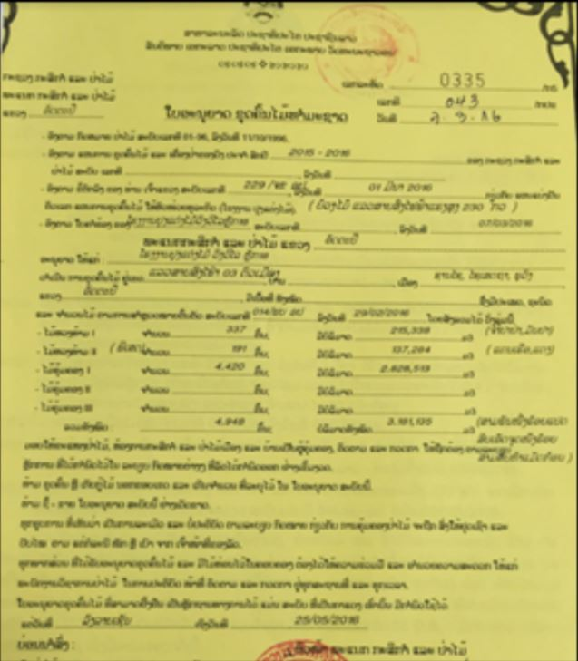
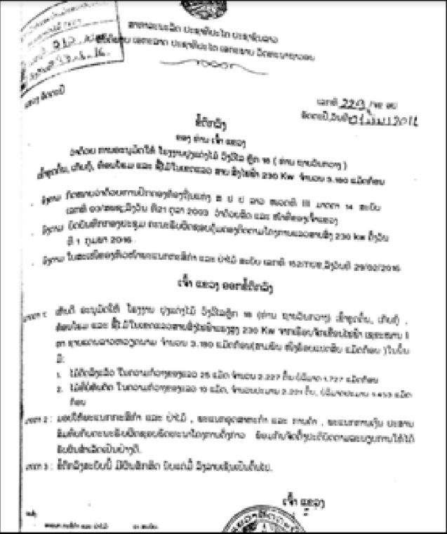
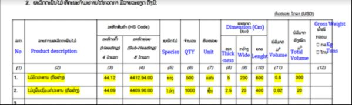
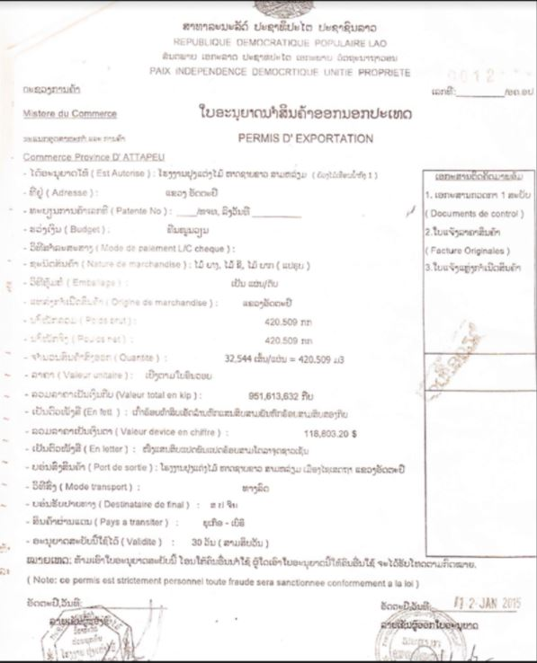
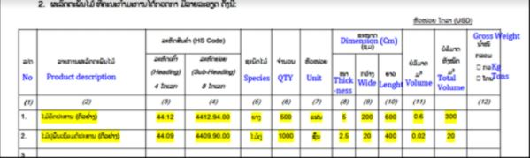
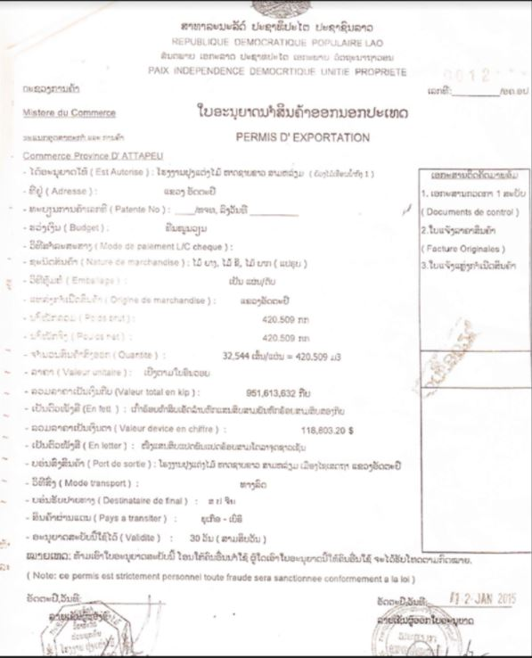
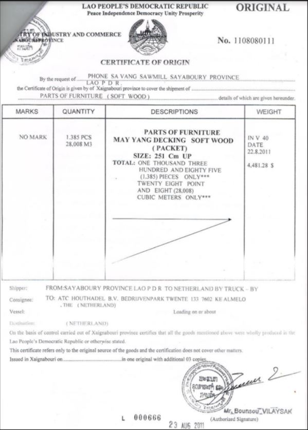
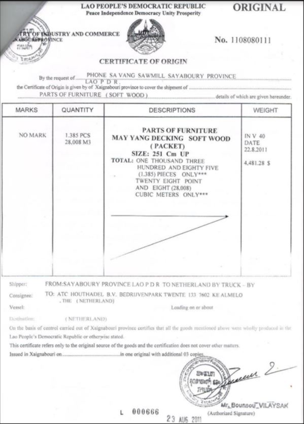
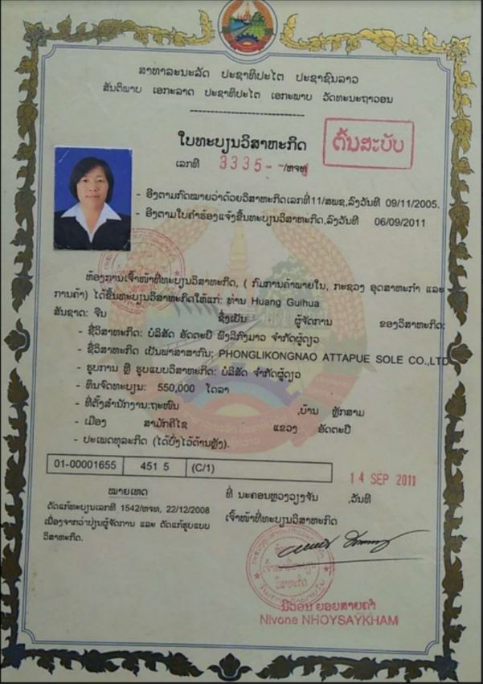

Implementing Timber Leglity Assurance Systems
A guide to comply with timber legality requirements in Laos and to support due diligence


LAOS
Quy định gỗ hợp pháp của Lào
Lào đang đàm phán Hiệp định Đối tác Tự nguyện với Liên minh Châu u. Một Hệ thống bảo đảm tính hợp pháp của gỗ đang được phát triển ở quốc gia này. Nó đảm bảo các sản phẩm gỗ tuân thủ luật pháp quốc gia và giúp ngăn chặn việc nhập khẩu gỗ bất hợp pháp vào các quốc gia khác. Hệ thống này phụ thuộc vào việc chính phủ phát triển hệ thống kiểm soát và xác minh hiệu quả và các nhà điều hành tuân thủ các quy định pháp luật và tiến hành trách nhiệm giải trình. Bằng cách nhận thức được các quy định pháp luật ở Lào được nêu rõ dưới đây, các cơ quan thực thi pháp luật và các nhà nhập khẩu có thể thực hiện các biện pháp kiểm soát để thúc đẩy gỗ được khai thác, vận chuyển và buôn bán hợp pháp từ Lào. Các nhà nhập khẩu và cơ quan xác minh có thể tham khảo hoặc sử dụng thông tin này trong việc thực hiện trách nhiệm giải trình.
Gợi ý xây dựng và thực hiện trách nhiệm giải trình cho các nhà nhập khẩu :
Trách nhiệm giải trình là gì ?

Phát triển hệ thống trách nhiệm giải trình
Thực hiện trách nhiệm giải trình
Các tài liệu sau đây được chọn theo định nghĩa gỗ hợp pháp của Lào và/ hoặc các quy định pháp luật trong các giai đoạn khác nhau của chuỗi cung ứng.
Giấy phép khai thác
Giấy phép khai thác phải do Trưởng phòng Phòng Nông lâm nghiệp tỉnh (Provincial Agriculture and Forestry Office-PAFO) ký, cấp cho nhà khai thác gỗ. Cần kiểm tra chữ ký, con dấu, cần đối chiếu hạn ngạch khai thác hàng năm, loài cây, khối lượng khai thác.
 
Thông báo chuyển đổi của Chính phủ
Thông báo chuyển đổi của Chính phủ phải do Thủ tướng hoặc Bộ trưởng - Chủ nhiệm Văn phòng Thủ tướng ký, giao cho Bộ trưởng Bộ Tài chính, Bộ Tài nguyên và Môi trường và Tỉnh trưởng theo dõi. Cần kiểm tra chữ ký, con dấu và ngày ký phù hợp, cần đối chiếu diện tích, loài gỗ và khối lượng khai thác.

Xác minh bảng kê gỗ
Bảng kê gỗ được ký, đóng dấu xác minh bởi một ban gồm cán bộ đo đạc, cán bộ Hạt lâm nghiệp cấp huyện và Trưởng phòng Nông lâm nghiệp tỉnh. Cần kiểm tra chữ ký, con dấu của các bên tham gia, số lóng, chiều dài, đường kính, khối lượng, loài, địa chỉ khai thác.
Kiểm kê trước khai thác
Kiểm kê trước khai thác phải do cán bộ PAFO và Trưởng phòng PAFO ký. Cần kiểm tra chữ ký, con dấu, bản đồ kiểm kê, bảng kê gỗ.
Đăng ký tài sản nhà nước
Đăng ký tài sản nhà nước phải do Trưởng phòng Quản lý công sản ký. Cần kiểm tra chữ ký, con dấu, ngày hợp lệ trên tài liệu.
Hợp đồng mua bán
Hợp đồng mua bán phải do Sở Công thương cấp tỉnh (POIC) và công ty mua gỗ ký. Cần kiểm tra chữ ký, con dấu, thời hạn phù hợp, loài gỗ, đường kính, khối lượng và nguồn gỗ.
Báo cáo sơ bộ hoạt động khai thác cấp tỉnh
Báo cáo sơ bộ hoạt động khai thác cấp tỉnh do đơn vị khai thác gỗ, quản lý rừng sản xuất thực hiện và Cục lâm nghiệp tỉnh ký xác nhận. Cần iểm tra chữ ký, con dấu, ngày ký, cần đối chiếu loài gỗ, khối lượng, nguồn gỗ, giá cả và thanh toán.
Báo cáo sản lượng và số dư gỗ
Báo cáo sản lượng và số dư gỗ do cán bộ giám sát nhà máy, đại diện doanh nghiệp, và Trưởng phòng Phòng Công thương cấp huyện (DOIC) ký, đóng dấu. Cần kiểm tra ngày tháng phát hành báo cáo, chữ ký và con dấu xác nhận của DOIC.
Thỏa thuận quản lý rừng của thôn (rừng chuyển đổi, rừng trồng)
Thỏa thuận quản lý rừng của thôn phải do công ty lâm nghiệp và đại diện cộng đồng thôn ký. Cần kiểm tra chữ ký của các bên tham gia, cần đối chiếu các tài liện bản đồ phân vùng đất đai/ rừng, đất thu hồi đền bù, kế hoạch tái định cư, biên bản họp.
Giấy phép CITES
Giấy phép CITES phải do Cơ quan quản lý CITES thuộc Bộ Nông Lâm nghiệp ký, đóng dấu, cấp cho nhà xuất khẩu các loài gỗ CITES. Cần kiểm tra tính hợp lệ, chữ ký và con dấu, tên của chủ gỗ, loài và khối lượng trên giấy phép.

Hóa đơn thanh toán
Hóa đơn thanh toán phải do Trưởng phòng Quản lý công sản ký. Cần đối chiếu bảng kê gỗ, cần kiểm tra chữ ký, ngày ký hợp lệ.
Giấy nộp thuế hàng năm
Giấy nộp thuế hàng năm phải do Cục trưởng Cục Thuế tỉnh ký. Cần kiểm tra tên và địa chỉ công ty, chữ ký và con dấu hợp lệ.
Biên lai nộp tiền Kho bạc
Biên lai nộp tiền Kho bạc phải do cán bộ Kho bạc tỉnh, Sở Tài chính tỉnh và người nhận tiền ký. Cần đối chiếu bảng kê gỗ về nguồn, loài và khối lượng, chữ ký, con dấu trên biên lai.
Phiếu vận chuyển
Phiếu vận chuyển phải do cán bộ DAFO, người lái xe tải và cán bộ DAF ký. Cần kiểm tra chữ ký, nguồn gỗ, thông tin về gỗ.
Giấy phép vận chuyển
Giấy phép vận chuyển phải do Trưởng phòng PAFO ký. Cần kiểm tra nguồn gỗ, thông tin gỗ, chữ ký, con dấu và ngày hiệu lực, đối chiếu phương tiện vận chuyển hợp lệ.
Giấy chứng nhận xuất khẩu sản phẩm gỗ
Giấy chứng nhận xuất khẩu sản phẩm gỗ phải do Chủ doanh nghiệp, và một ban gồm Sở Công thương (POIC) Sở Nông Lâm nghiệp và Sở Tài chính ký. Cần kiểm tra chữ ký, con dấu, tên và địa chỉ công ty, cần đối chiếu khối lượng, đơn vị tính hợp lệ.
 



 

Giấy chứng nhận đăng ký kinh doanh
Giấy chứng nhận đăng ký kinh doanh phải do Cơ quan đăng ký kinh doanh (Bộ Công Thương, hoặc Sở Công Thương cấp tỉnh hoặc Phòng Công Thương cấp huyện) ký. Cần kiểm tra thời hạn, chữ ký, con dấu của các cơ quan thẩm quyền hợp pháp.
Giấy chứng nhận vận hành nhà máy
Giấy chứng nhận vận hành nhà máy phải do Giám đốc POIC ký. Cần kiểm tra chữ ký, con dấu, mã số doanh nghiệp, thời hạn của chứng nhận.
Phê duyệt báo cáo đánh giá tác động xã hội và môi trường
Báo cáo đánh giá tác động xã hội và môi trường phải được Tổng cục trưởng Tổng cục Môi trường và Tài nguyên nước ký và ban hành chứng nhận tuân thủ môi trường. Cần kiểm tra chữ ký, con dấu, ngày ký, số quyết định, tên và địa chỉ chủ dự án.
Hợp đồng lao động
Hợp đồng lao động do công ty lập ra và có chữ ký của người sử dụng lao động và người lao động. Cần kiểm tra nội dung hợp đồng, thông tin, chữ ký và con dấu đầy đủ, chính xác.